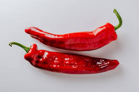
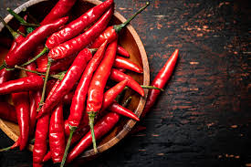

CHILLI PEPPER
Introduction

Chili peppers, also spelled chile or chilli (from Classical Nahuatl chīlli ), are varieties of the berry-fruit of plants from the genus Capsicum, which are members of the nightshade family Solanaceae, cultivated for their pungency. Chili peppers are widely used in many cuisines as a spice to add "heat" to dishes. Capsaicin and related compounds known as capsaicinoids are the substances that give chili peppers their intensity when ingested or applied topically. Chili peppers exhibit a wide range of heat and flavors. This diversity is the reason behind the availability of different types of paprika and chili powder, each offering its own distinctive taste and heat level.
Chili peppers are believed to have originated somewhere in Central or South America and were first cultivated in Mexico. European explorers brought chili peppers back to the Old World in the late 16th century as part of the Columbian Exchange, which led to many cultivars of chili pepper spreading around the world and finding use in both food and traditional medicine. This led to a wide variety of cultivars, including the annuum species, with its glabriusculum variety and New Mexico cultivar group, and the species of baccatum, chinense, frutescens, and pubescens.
Cultivars grown in North America and Europe are believed to all derive from Capsicum annuum and have white, yellow, red, or purple to black fruits. In 2019, the world's production of raw green chili peppers amounted to 38 million tons, with China producing half.
Nutritions
Chili peppers, also known as hot peppers or chili peppers, are popular spices used in various cuisines worldwide. They are not only known for their fiery heat but also for their nutritional content. Here are the key nutrients found in chili peppers:
- Vitamins:
- Vitamin C: Chili peppers are rich in vitamin C, an antioxidant that supports the immune system, promotes collagen production, and helps protect cells from oxidative damage.
- Vitamin A: They also contain vitamin A, important for vision health, immune function, and skin health.
- Minerals:
- Potassium: Chili peppers provide potassium, an essential mineral that helps regulate blood pressure, fluid balance, and muscle function.
- Magnesium: They contain magnesium, which plays a role in nerve function, muscle contraction, and bone health.
- Iron: Chili peppers contribute to iron intake, vital for red blood cell production and oxygen transport in the body.
- Phosphorus: This mineral is important for bone health, energy metabolism, and DNA synthesis.
- Capsaicin:
- The compound responsible for the heat in chili peppers is capsaicin. It not only adds spiciness but also offers potential health benefits, including pain relief, anti-inflammatory effects, and appetite suppression.
- Capsaicin is also being studied for its potential to boost metabolism and aid in weight management.
- Dietary Fiber:
- Chili peppers contain dietary fiber, which supports digestive health, promotes satiety, and helps regulate cholesterol levels.
- Antioxidants:
- Chili peppers are rich in various antioxidants, including carotenoids like beta-carotene and zeaxanthin, which help neutralize free radicals and reduce the risk of chronic diseases.
- Low in Calories:
- Chili peppers are low in calories but pack a flavorful punch, making them a great addition to a healthy diet for flavor without excessive calories.
It's important to note that the actual nutritional content of chili peppers can vary depending on the variety, ripeness, and preparation method. Including chili peppers in moderation as part of a balanced diet can contribute to overall nutrient intake and add zest to meals.
Soil and Nutritions

Chili peppers thrive in well-drained, fertile soil with good nutrient availability. Here are the key aspects of soil and nutrition requirements for growing chili peppers:
- Soil Type:
- Chili peppers prefer well-drained soil with good moisture retention. Sandy loam or loamy soils are ideal, as they provide good aeration and root penetration.
- Ensure that the soil has adequate organic matter content to support nutrient uptake and microbial activity.
- Soil pH:
- Chili peppers prefer slightly acidic to neutral soil pH levels ranging from 6.0 to 7.0. Adjust soil pH if necessary using lime to raise pH or sulfur to lower pH, based on soil test recommendations.
- Nutrient Requirements:
- Nitrogen (N): Chili peppers require moderate levels of nitrogen for vegetative growth, leaf development, and fruit production. Apply nitrogen fertilizer based on soil test results and plant growth stage.
- Phosphorus (P): Phosphorus is important for root development, flowering, and fruiting in chili peppers. Apply phosphorus fertilizer before planting or at the early stages of growth.
- Potassium (K): Chili peppers benefit from potassium for overall plant health, stress tolerance, and fruit quality. Apply potassium fertilizer based on soil test results and plant requirements.
- Micronutrients: Ensure that the soil has adequate levels of essential micronutrients such as zinc, iron, manganese, and boron. Correct any micronutrient deficiencies with targeted micronutrient fertilizers or foliar sprays.
- Fertilization:
- Use a balanced fertilizer with a ratio suitable for vegetables, such as 10-10-10 or 12-12-12, or follow the specific recommendations from your soil test results.
- Apply fertilizers evenly around the base of the chili pepper plants, avoiding direct contact with the stems.
- Consider using organic fertilizers such as compost, well-rotted manure, or organic granular fertilizers to improve soil fertility and promote long-term nutrient availability.
- Watering and Soil Moisture:
- Maintain consistent soil moisture levels for chili peppers, as they require adequate water for nutrient uptake and fruit development.
- Avoid overwatering, as it can lead to waterlogged soil and nutrient leaching.
- Soil Amendments:
- Incorporate organic matter into the soil before planting chili peppers to improve soil structure, nutrient retention, and water holding capacity.
- Mulch around chili pepper plants with organic mulches such as straw or compost to conserve soil moisture, suppress weeds, and enhance nutrient cycling.
By addressing these soil and nutrition requirements, you can create optimal growing conditions for chili peppers and promote healthy plant growth and fruit production.
How to plant chill pepper
Planting chili peppers involves several steps to ensure successful growth and a bountiful harvest. Here's a guide on how to plant chili peppers:
- Selecting Pepper Varieties:
- Choose chili pepper varieties that are well-suited to your climate and growing conditions. Consider factors such as heat tolerance, disease resistance, and intended use (e.g., culinary, ornamental).
- Starting Seeds:
- Start chili pepper seeds indoors about 8-10 weeks before the last frost date in your area. Use a seed starting mix in trays or pots with good drainage.
- Plant seeds at a depth of 1/4 to 1/2 inch and keep the soil consistently moist but not waterlogged.
- Place the seed trays in a warm location with plenty of sunlight or use grow lights to promote healthy seedling growth.
- Transplanting Seedlings:
- Once the seedlings have developed 2-3 sets of true leaves and outdoor temperatures are warm enough (above 60°F or 15°C), transplant them into larger pots or directly into the garden.
- Choose a sunny location for planting chili peppers, as they require full sun (at least 6-8 hours of sunlight per day) for optimal growth and fruit production.
- Ensure proper spacing between pepper plants, typically 18-24 inches apart in rows spaced 24-36 inches apart, to allow for adequate air circulation and growth.
- Soil Preparation:
- Prepare the soil by amending it with organic matter such as compost or well-rotted manure to improve fertility, drainage, and nutrient availability.
- Test the soil pH and aim for a slightly acidic to neutral pH range of 6.0-7.0, as chili peppers prefer well-drained, fertile soil.
- Watering:
- Provide consistent watering to chili pepper plants, especially during dry periods and hot weather. Avoid overwatering, which can lead to root rot, but ensure that the soil remains evenly moist.
- Fertilizing:
- Fertilize chili pepper plants with a balanced fertilizer or a fertilizer formulated specifically for vegetables. Apply fertilizer according to package instructions, usually every 4-6 weeks during the growing season.
- Avoid excessive nitrogen fertilization, as it can promote lush foliage growth at the expense of fruit production.
- Support and Pruning:
- Some chili pepper varieties may benefit from staking or support cages to prevent the plants from bending or breaking under the weight of heavy fruit.
- Prune chili pepper plants as needed to remove dead or diseased foliage, improve air circulation, and encourage bushier growth.
Pest and Disease Management:
- Monitor chili pepper plants for pests such as aphids, spider mites, and caterpillars. Use organic pest control methods or insecticidal soap as needed.
- Watch for signs of common diseases like powdery mildew, bacterial spot, and fungal infections. Practice good garden hygiene and remove affected plants or leaves promptly.
- Harvesting:
- Chili peppers can be harvested when they reach the desired size and color. Most varieties are ready for harvest 60-90 days after transplanting.
- Use pruning shears or scissors to cut peppers from the plant, leaving a short stem attached to the fruit. Avoid pulling or twisting peppers off the plant.
By following these planting and care guidelines, you can grow healthy chili pepper plants and enjoy a plentiful harvest of flavorful peppers.
Fertilizing
Fertilizing chili peppers is essential for promoting healthy growth, vigorous fruiting, and maximizing yields. Here are some guidelines for fertilizing chili peppers:
- Soil Testing:
- Before fertilizing, conduct a soil test to determine the nutrient levels and pH of the soil. Soil testing helps identify any deficiencies or excesses that need to be addressed through fertilization.
- Aim for a slightly acidic to neutral soil pH range of 6.0-7.0, as chili peppers prefer well-drained, fertile soil.
- Nutrient Requirements:
- Chili peppers have specific nutrient requirements, including nitrogen (N), phosphorus (P), potassium (K), and micronutrients.
- Nitrogen (N): Chili peppers require moderate levels of nitrogen for vegetative growth and fruit development. However, excessive nitrogen can lead to lush foliage at the expense of fruit production. Apply nitrogen fertilizer based on soil test recommendations and crop growth stage.
- Phosphorus (P): Phosphorus is important for root development, flowering, and fruiting. Apply phosphorus fertilizer before planting or at the early stages of growth to promote healthy root systems.
- Potassium (K): Chili peppers benefit from potassium for overall plant health, stress tolerance, and fruit quality. Apply potassium fertilizer based on soil test results and plant requirements.
- Micronutrients: Ensure that the soil has adequate levels of essential micronutrients such as zinc, iron, manganese, and boron. Correct any micronutrient deficiencies with targeted micronutrient fertilizers or foliar sprays.
- Fertilizer Application:
- Use a balanced fertilizer with a ratio suitable for vegetables, such as 10-10-10 or 12-12-12, or follow the specific recommendations from your soil test results.
- Apply fertilizers evenly around the base of the chili pepper plants, avoiding direct contact with the stems.
- Consider using organic fertilizers such as compost, well-rotted manure, or organic granular fertilizers to improve soil fertility and promote long-term nutrient availability.
- Fertilization Schedule:
- Apply a starter fertilizer with phosphorus at planting or transplanting to support early root development.
- Apply additional nitrogen and potassium fertilizers during the growing season based on plant growth stage and nutrient requirements.
- Split applications of fertilizers can be beneficial, especially for nitrogen, to promote steady growth and minimize nutrient losses.
- Watering and Soil Moisture:
- Ensure adequate soil moisture levels for chili peppers, as proper irrigation is essential for nutrient uptake and plant health.
- Avoid overwatering, which can leach nutrients from the soil, and monitor soil moisture to prevent drought stress.
- Organic Matter and Mulching:
- Incorporate organic matter into the soil to improve nutrient retention, water holding capacity, and soil structure.
- Mulch around chili pepper plants with organic mulches such as straw or compost to conserve soil moisture, suppress weeds, and enhance nutrient cycling.
- Monitoring and Adjustments:
- Monitor chili pepper plants for signs of nutrient deficiencies or excesses, such as yellowing leaves, stunted growth, or leaf burn.
- Adjust fertilizer applications based on plant response, weather conditions, and soil nutrient levels to optimize nutrient management and avoid nutrient imbalances.
By following these fertilization practices and providing proper care, you can support healthy chili pepper plants and achieve a bountiful harvest of flavorful peppers.